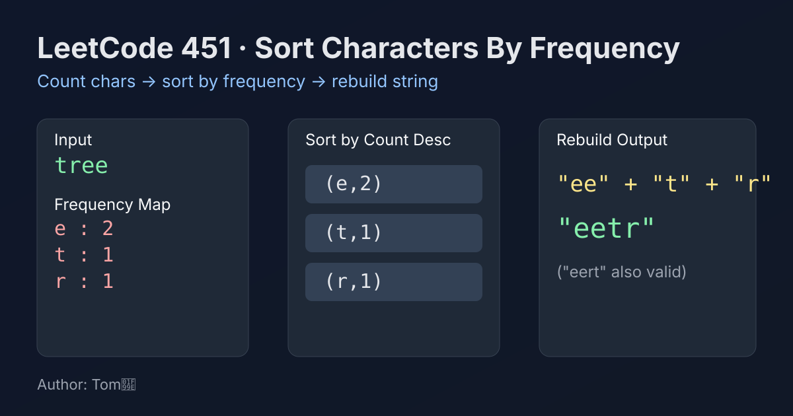

LeetCode 451: Sort Characters By Frequency (Frequency Count + Bucket/Sort Reconstruction)
LeetCode 451Hash TableStringSortingToday we solve LeetCode 451 - Sort Characters By Frequency.
Source: https://leetcode.com/problems/sort-characters-by-frequency/

English
Problem Summary
Given a string s, reorder its characters so that characters with higher frequencies appear first. If multiple answers exist, return any valid one.
Key Insight
The only thing that matters is each character's count. So first build char -> frequency, then rebuild the string from highest frequency to lowest frequency.
Brute Force and Limitations
A naïve way is repeatedly scanning the string to find the most frequent remaining character, append it, then remove it. That causes many repeated scans and poor performance.
Optimal Algorithm Steps
1) Count every character frequency using a hash map.
2) Convert map entries into a list.
3) Sort entries by frequency descending.
4) Append each character exactly freq times to a StringBuilder (or equivalent).
5) Return the built string.
Complexity Analysis
Let n be string length and k be distinct characters.
Time: O(n + k log k).
Space: O(k) (output excluded).
Common Pitfalls
- Sorting by character instead of frequency.
- Forgetting to append a character freq times.
- Building string with repeated concatenation (ans += c) causing extra overhead.
Reference Implementations (Java / Go / C++ / Python / JavaScript)
class Solution {
public String frequencySort(String s) {
Map<Character, Integer> freq = new HashMap<>();
for (char c : s.toCharArray()) {
freq.put(c, freq.getOrDefault(c, 0) + 1);
}
List<Map.Entry<Character, Integer>> entries = new ArrayList<>(freq.entrySet());
entries.sort((a, b) -> b.getValue() - a.getValue());
StringBuilder sb = new StringBuilder();
for (Map.Entry<Character, Integer> e : entries) {
char ch = e.getKey();
int count = e.getValue();
for (int i = 0; i < count; i++) sb.append(ch);
}
return sb.toString();
}
}func frequencySort(s string) string {
freq := map[rune]int{}
for _, ch := range s {
freq[ch]++
}
type pair struct {
ch rune
count int
}
arr := make([]pair, 0, len(freq))
for ch, c := range freq {
arr = append(arr, pair{ch, c})
}
sort.Slice(arr, func(i, j int) bool {
return arr[i].count > arr[j].count
})
var b strings.Builder
for _, p := range arr {
for i := 0; i < p.count; i++ {
b.WriteRune(p.ch)
}
}
return b.String()
}class Solution {
public:
string frequencySort(string s) {
unordered_map<char, int> freq;
for (char c : s) freq[c]++;
vector<pair<char, int>> arr(freq.begin(), freq.end());
sort(arr.begin(), arr.end(), [](const auto& a, const auto& b) {
return a.second > b.second;
});
string ans;
ans.reserve(s.size());
for (auto& p : arr) {
ans.append(p.second, p.first);
}
return ans;
}
};from collections import Counter
class Solution:
def frequencySort(self, s: str) -> str:
freq = Counter(s)
parts = []
for ch, count in sorted(freq.items(), key=lambda x: x[1], reverse=True):
parts.append(ch * count)
return ''.join(parts)var frequencySort = function(s) {
const freq = new Map();
for (const ch of s) {
freq.set(ch, (freq.get(ch) || 0) + 1);
}
const arr = Array.from(freq.entries());
arr.sort((a, b) => b[1] - a[1]);
let out = "";
for (const [ch, count] of arr) {
out += ch.repeat(count);
}
return out;
};中文
题目概述
给定字符串 s，将字符按出现频次从高到低重新排列。若有多个合法答案，返回任意一个即可。
核心思路
先统计每个字符出现次数（哈希表），再按频次降序把字符拼接回结果字符串。
暴力解法与不足
如果每次都在剩余字符里反复扫描“当前最高频字符”，会产生大量重复扫描，效率较差。
最优算法步骤
1）用哈希表统计 char -> count。
2）把统计结果转成数组/列表。
3）按频次降序排序。
4）按排序结果，把每个字符重复追加 count 次。
5）返回拼接后的字符串。
复杂度分析
设字符串长度为 n，不同字符数为 k。
时间复杂度：O(n + k log k)。
空间复杂度：O(k)（不含输出）。
常见陷阱
- 按字符字典序排序而不是按频次排序。
- 只追加一次字符，忘了追加 count 次。
- 在循环里直接字符串相加，导致额外开销。
多语言参考实现（Java / Go / C++ / Python / JavaScript）
class Solution {
public String frequencySort(String s) {
Map<Character, Integer> freq = new HashMap<>();
for (char c : s.toCharArray()) {
freq.put(c, freq.getOrDefault(c, 0) + 1);
}
List<Map.Entry<Character, Integer>> entries = new ArrayList<>(freq.entrySet());
entries.sort((a, b) -> b.getValue() - a.getValue());
StringBuilder sb = new StringBuilder();
for (Map.Entry<Character, Integer> e : entries) {
char ch = e.getKey();
int count = e.getValue();
for (int i = 0; i < count; i++) sb.append(ch);
}
return sb.toString();
}
}func frequencySort(s string) string {
freq := map[rune]int{}
for _, ch := range s {
freq[ch]++
}
type pair struct {
ch rune
count int
}
arr := make([]pair, 0, len(freq))
for ch, c := range freq {
arr = append(arr, pair{ch, c})
}
sort.Slice(arr, func(i, j int) bool {
return arr[i].count > arr[j].count
})
var b strings.Builder
for _, p := range arr {
for i := 0; i < p.count; i++ {
b.WriteRune(p.ch)
}
}
return b.String()
}class Solution {
public:
string frequencySort(string s) {
unordered_map<char, int> freq;
for (char c : s) freq[c]++;
vector<pair<char, int>> arr(freq.begin(), freq.end());
sort(arr.begin(), arr.end(), [](const auto& a, const auto& b) {
return a.second > b.second;
});
string ans;
ans.reserve(s.size());
for (auto& p : arr) {
ans.append(p.second, p.first);
}
return ans;
}
};from collections import Counter
class Solution:
def frequencySort(self, s: str) -> str:
freq = Counter(s)
parts = []
for ch, count in sorted(freq.items(), key=lambda x: x[1], reverse=True):
parts.append(ch * count)
return ''.join(parts)var frequencySort = function(s) {
const freq = new Map();
for (const ch of s) {
freq.set(ch, (freq.get(ch) || 0) + 1);
}
const arr = Array.from(freq.entries());
arr.sort((a, b) => b[1] - a[1]);
let out = "";
for (const [ch, count] of arr) {
out += ch.repeat(count);
}
return out;
};
Comments